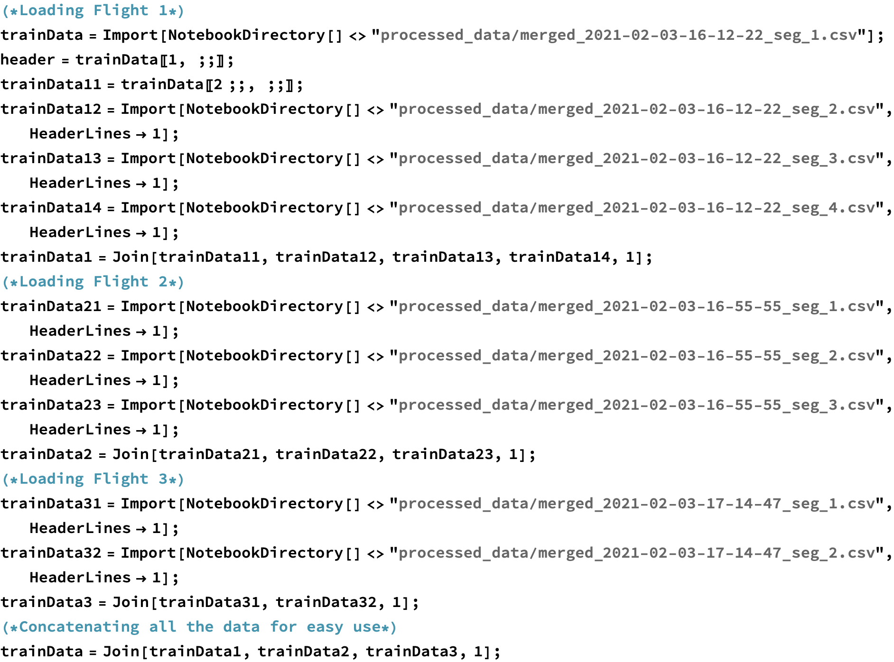
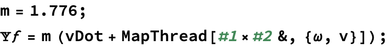
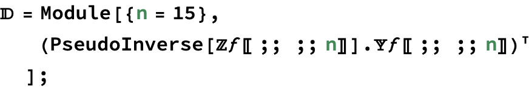
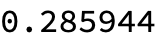

Modeling this as a second order polynomial, we can write
In[1]:=
Training
Modeling Input/Aero Forces
We want to model the the force from each motor/rotor i, .
The first method we use to do this is the modeling each each
Here Ω is the rotor velocity of each motor and and are the body linear and rotational velocities.
Modeling this as a second order polynomial, we can write  using Einstein tensor notation as:
using Einstein tensor notation as:
Here A is a column vector (bias term), B is a matrix (linear term), C is a 3rd order tensor (quadratic term). Inorder to use linear algebra tools we can reorder this into a matrix problem as follows:
Where denotes the Kronecker product and {x}is the dimension of the vector x.
Modeling Input/Aero Moments
Starting from Euler’s equation:

Again modeling it as a quadratic of x. However this time it is important to use , to capture conservation of angular momentum’s impact on body torque
We can again express this as a matrix problem as follows:
Fitting Model
Importing Data
Loading the segments comprising one full flight and concatenating

Plotting this data of quad rotors position through time
The first flight is a aggressive linear oscillation, the second flight is a wobbly circle, and the third flight is a aggressive 3d circle. The flights cover different regimes of motion/actuation. The first trajectory in particular forces the quad through its own prop wash.
Extracting Data
Converting set of quaternions to a set of Rotation matrices
Force Model
Examining The Data
Plotting the body’s position and acceleration over the two flights.
From this we see that when the quad rotors body is stationary the recorded acceleration of the body is . Thus we note that the data labeled “acceleration body x”, “acceleration body y”, “acceleration body z” is actually a filtered fusion Vicon/IMU measurement. Thus we can modify our force fitting function:
Removing Coriolis from acceleration each time step:

Here is the net forces applied on the quad rotor by the quad rotor as well as the aerodynamic forces on the quad rotor.
Here we plot the motor speeds
Fitting Force
As above we assume the forces on the quad rotor are a function of only the body linear and angular velocity, as well as the motor speeds.
We are then going to be fitting

As is modeled as a quadratic we must apply the transform  . Constructing the set of sample points.
. Constructing the set of sample points.
Finally we can now compute the matrix D, E

Measuring Goodness of Fit
We can then evaluate the performance of this model using
Checking the goodness of fit using the coefficient of determination:

We compute the  coefficient then:
coefficient then:
Saving the quadratic least squares matrix:
Torque Model
Fitting Torque
As above we assume the forces on the quad rotor are a function of only the body linear and angular velocity, as well as the motor speeds.
As is modeled as a quadratic we must apply the transform  . Constructing the set of sample points.
. Constructing the set of sample points.
Finally we can now compute the matrix D, E
Measuring Goodness of Fit
We can then evaluate the performance of this model using
Checking the goodness of fit using the coefficient of determination:
We compute the  coefficient then:
coefficient then:

Saving the quadratic least squares matrix:

Testing Dataset 1
Importing Data
Loading in the testing data

Extracting Data

Converting set of quaternions to a set of Rotation matrices

Testing Fitted Model
Redefining quadratic transformation and applying on data set

Computing the ground truth
Test data Goodness of Fit

| 0.972797 |
| -0.0775922 |
Testing Dataset 2
Importing Data
Loading in the testing data
Extracting Data
Converting set of quaternions to a set of Rotation matrices

Testing Fitted Model
Redefining quadratic transformation and applying on data set

Computing the ground truth
Test data Goodness of Fit

| 0.961393 |
| 0.164753 |
Exporting to HTML